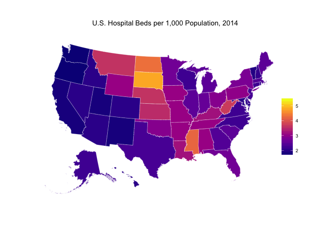

The goal of kffdata is to store a few datasets from the Kaiser Family Foundation in a tidy format. The following datasets are currently available:
kffdata::hosp_beds
kffdata::hosp_admissions
kffdata::hosp_em_visits
kffdata::hosp_ip_days
kffdata::hosp_op_visits
kffdata::hc_eee_pc
kffdata::hc_eee_pc_by_srvu
kffdata::pct_diabetes
kffdata::pct_overweight_obesityInstallation
You can install kffdata from the Github repo with
# install.packages("devtools")
devtools::install_github("jjchern/kffdata")
# To uninstall the package, use:
# remove.packages("kffdata")Usage
library(tidyverse)
#> ── Attaching packages ─────────────────────────────────────────── tidyverse 1.2.1 ──
#> ✔ ggplot2 2.2.1 ✔ purrr 0.2.4
#> ✔ tibble 1.4.2 ✔ dplyr 0.7.4
#> ✔ tidyr 0.8.0 ✔ stringr 1.3.0
#> ✔ readr 1.1.1.9000 ✔ forcats 0.2.0
#> ── Conflicts ────────────────────────────────────────────── tidyverse_conflicts() ──
#> ✖ dplyr::filter() masks stats::filter()
#> ✖ dplyr::lag() masks stats::lag()
kffdata::hosp_beds
#> # A tibble: 867 x 8
#> state fips usps year for_profit non_profit state_local_gove… total
#> <chr> <chr> <chr> <chr> <dbl> <dbl> <dbl> <dbl>
#> 1 Alabama 01 AL 1999 0.700 1.40 1.60 3.70
#> 2 Alabama 01 AL 2000 0.700 1.40 1.50 3.70
#> 3 Alabama 01 AL 2001 0.800 1.40 1.50 3.70
#> 4 Alabama 01 AL 2002 0.800 1.40 1.40 3.60
#> 5 Alabama 01 AL 2003 0.800 1.40 1.30 3.50
#> 6 Alabama 01 AL 2004 0.800 1.30 1.20 3.40
#> 7 Alabama 01 AL 2005 0.800 1.30 0.400 3.40
#> 8 Alabama 01 AL 2006 0.900 0.900 1.50 3.40
#> 9 Alabama 01 AL 2007 0.900 0.900 1.50 3.40
#> 10 Alabama 01 AL 2008 0.900 0.900 1.50 3.30
#> # ... with 857 more rows
kffdata::hosp_admissions
#> # A tibble: 867 x 8
#> state fips usps year for_profit non_profit state_local_gove… total
#> <chr> <chr> <chr> <chr> <dbl> <dbl> <dbl> <dbl>
#> 1 Alabama 01 AL 1999 26.4 63.5 63.5 153
#> 2 Alabama 01 AL 2000 31.7 63.2 57.9 153
#> 3 Alabama 01 AL 2001 31.8 62.2 59.4 153
#> 4 Alabama 01 AL 2002 32.0 62.3 56.7 151
#> 5 Alabama 01 AL 2003 36.6 63.1 57.7 157
#> 6 Alabama 01 AL 2004 37.3 63.4 57.5 158
#> 7 Alabama 01 AL 2005 37.0 59.5 58.8 155
#> 8 Alabama 01 AL 2006 40.1 40.4 68.5 149
#> 9 Alabama 01 AL 2007 39.8 41.6 69.1 150
#> 10 Alabama 01 AL 2008 37.5 40.2 69.3 147
#> # ... with 857 more rows
kffdata::hosp_em_visits
#> # A tibble: 867 x 8
#> state fips usps year for_profit non_profit state_local_gove… total
#> <chr> <chr> <chr> <chr> <dbl> <dbl> <dbl> <dbl>
#> 1 Alabama 01 AL 1999 78.4 174 199 451
#> 2 Alabama 01 AL 2000 102 172 192 465
#> 3 Alabama 01 AL 2001 101 154 184 439
#> 4 Alabama 01 AL 2002 108 174 201 483
#> 5 Alabama 01 AL 2003 116 168 192 476
#> 6 Alabama 01 AL 2004 107 158 183 448
#> 7 Alabama 01 AL 2005 114 156 188 459
#> 8 Alabama 01 AL 2006 133 118 227 345
#> 9 Alabama 01 AL 2007 121 129 237 366
#> 10 Alabama 01 AL 2008 122 127 236 486
#> # ... with 857 more rows
kffdata::hosp_ip_days
#> # A tibble: 867 x 8
#> state fips usps year for_profit non_profit state_local_gove… total
#> <chr> <chr> <chr> <chr> <chr> <chr> <chr> <chr>
#> 1 Alabama 01 AL 1999 128.4766 324.2993 371.8493 824.…
#> 2 Alabama 01 AL 2000 143.0041 314.0868 348.418 805.…
#> 3 Alabama 01 AL 2001 142.6606 305.3141 351.3807 799.…
#> 4 Alabama 01 AL 2002 151.4114 294.168 278.7336 724.…
#> 5 Alabama 01 AL 2003 169.9235 316.3012 301.3904 787.…
#> 6 Alabama 01 AL 2004 175.6933 319.9925 314.0798 809.…
#> 7 Alabama 01 AL 2005 176.524 304.9451 316.1894 797.…
#> 8 Alabama 01 AL 2006 193 214 368 775
#> 9 Alabama 01 AL 2007 193 212 362 767
#> 10 Alabama 01 AL 2008 182 207 364 754
#> # ... with 857 more rows
kffdata::hosp_op_visits
#> # A tibble: 867 x 8
#> state fips usps year for_profit non_profit state_local_gove… total
#> <chr> <chr> <chr> <chr> <dbl> <dbl> <dbl> <dbl>
#> 1 Alabama 01 AL 1999 314 763 716 1793
#> 2 Alabama 01 AL 2000 341 773 675 1789
#> 3 Alabama 01 AL 2001 345 707 691 1743
#> 4 Alabama 01 AL 2002 485 922 836 2243
#> 5 Alabama 01 AL 2003 342 864 770 1976
#> 6 Alabama 01 AL 2004 330 816 680 1826
#> 7 Alabama 01 AL 2005 322 721 617 1659
#> 8 Alabama 01 AL 2006 366 563 819 1748
#> 9 Alabama 01 AL 2007 355 590 824 1769
#> 10 Alabama 01 AL 2008 353 640 936 1928
#> # ... with 857 more rows
kffdata::hc_eee_pc
#> # A tibble: 1,224 x 5
#> state fips usps year health_spending_per_capita
#> <chr> <chr> <chr> <chr> <dbl>
#> 1 Alabama 01 AL 1991 2535
#> 2 Alabama 01 AL 1992 2716
#> 3 Alabama 01 AL 1993 2854
#> 4 Alabama 01 AL 1994 2991
#> 5 Alabama 01 AL 1995 3163
#> 6 Alabama 01 AL 1996 3336
#> 7 Alabama 01 AL 1997 3540
#> 8 Alabama 01 AL 1998 3601
#> 9 Alabama 01 AL 1999 3714
#> 10 Alabama 01 AL 2000 3932
#> # ... with 1,214 more rows
kffdata::hc_eee_pc_by_srvu
#> # A tibble: 1,224 x 13
#> state fips usps year dental_services home_health_care hospital_care
#> <chr> <chr> <chr> <chr> <dbl> <dbl> <dbl>
#> 1 Alaba… 01 AL 1991 98.0 62.0 1092
#> 2 Alaba… 01 AL 1992 110 79.0 1201
#> 3 Alaba… 01 AL 1993 114 104 1225
#> 4 Alaba… 01 AL 1994 121 118 1257
#> 5 Alaba… 01 AL 1995 128 139 1345
#> 6 Alaba… 01 AL 1996 135 150 1411
#> 7 Alaba… 01 AL 1997 143 150 1405
#> 8 Alaba… 01 AL 1998 148 128 1379
#> 9 Alaba… 01 AL 1999 160 106 1407
#> 10 Alaba… 01 AL 2000 170 99.0 1448
#> # ... with 1,214 more rows, and 6 more variables: medical_durables <dbl>,
#> # nursing_home_care <dbl>,
#> # other_health_residential_and_personal_care <dbl>,
#> # other_professional_services <dbl>,
#> # physician_and_clinical_services <dbl>,
#> # prescription_drugs_and_other_medical_nondurables <dbl>
kffdata::pct_diabetes
#> # A tibble: 204 x 8
#> state fips usps year no no_pre_diabetes… yes yes_pregnancy_r…
#> <chr> <chr> <chr> <chr> <chr> <chr> <chr> <chr>
#> 1 Alabama 01 AL 2013 0.838 0.014 0.138 0.01
#> 2 Alabama 01 AL 2014 0.849 0.015 0.129 0.006
#> 3 Alabama 01 AL 2015 0.845 0.013 0.135 0.008
#> 4 Alabama 01 AL 2016 0.834 0.011 0.146 0.008
#> 5 Alaska 02 AK 2013 0.906 0.014 0.071 0.009
#> 6 Alaska 02 AK 2014 0.904 0.015 0.074 NSD
#> 7 Alaska 02 AK 2015 0.892 0.01 0.076 NSD
#> 8 Alaska 02 AK 2016 0.898 0.019 0.075 NSD
#> 9 Arizona 04 AZ 2013 0.877 0.009 0.107 NSD
#> 10 Arizona 04 AZ 2014 0.875 0.015 0.1 0.01
#> # ... with 194 more rows
kffdata::pct_overweight_obesity
#> # A tibble: 204 x 5
#> state fips usps year adult_overweight_obesity_rate
#> <chr> <chr> <chr> <chr> <dbl>
#> 1 Alabama 01 AL 2013 0.682
#> 2 Alabama 01 AL 2014 0.670
#> 3 Alabama 01 AL 2015 0.687
#> 4 Alabama 01 AL 2016 0.695
#> 5 Alaska 02 AK 2013 0.661
#> 6 Alaska 02 AK 2014 0.648
#> 7 Alaska 02 AK 2015 0.672
#> 8 Alaska 02 AK 2016 0.667
#> 9 Arizona 04 AZ 2013 0.618
#> 10 Arizona 04 AZ 2014 0.640
#> # ... with 194 more rows